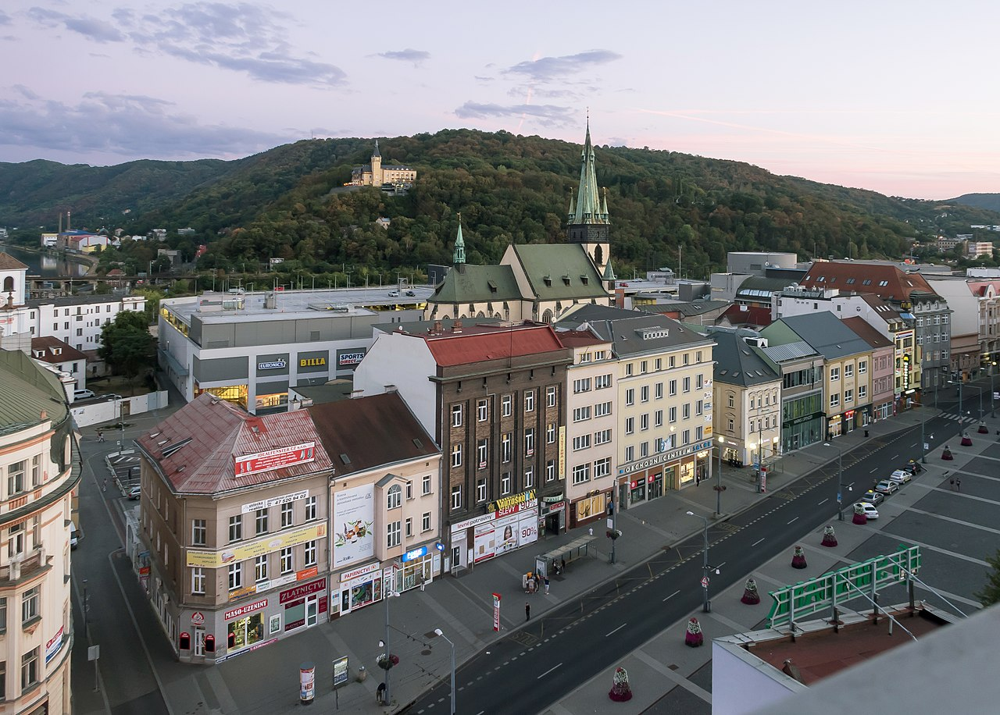

Imagen de la ciudad de Ústi Nad Labem
Es la séptima ciudad más poblada del país con una población cercana a los 100.000 habitantes. Está situada en los Montes Metálicos, cerca de la confluencia entre el río Elba y el río Bílina.

La cerradura cerca de Střekov
Es uno de los centros industriales más importantes del país, además de poseer uno de los puertos fluviales más activos de la región. Es también un importante nodo ferroviario.